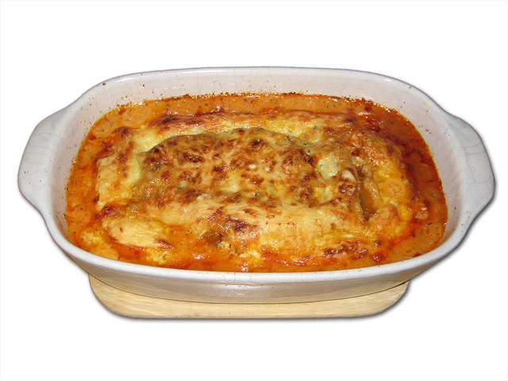

Lasagna Recipe

Description
This is a very basic, very barebones lasagna recipe (that doesn't even have measurements for things aside from the oven temp and egg count) quickly assembled
for this mock webpage. You probably should not utilize this recipe to actually make a lasagna. If you do, you do so at your own peril. Lasagnas are tasty,
wonderful noodle casseroles that should be treated with the respect they deserve. So please feel free to look elsewhere for a more palatable recipe.
Ingredients
- Lasagna Noodles
- Tomato Sauce
- Cottage Cheese
- 2 Eggs
- Parmesan Cheese
- Table Salt
- Ground Beef
- Mozzarella Cheese
Steps
- Preheat oven to 350 °F (177 °C).
- Place a pot of water over high heat until it comes to a boil. Lightly salt the water.
- Lower the water's heat to a simmer. Place the lasagna noodles into the water, and cook until al dente.
- Cook the Ground Beef in a pan until lightly browned.
- Place the eggs, cottage cheese, and permesan cheese into a bowl and mix well.
- In a baking pan, place the cooked noodles on the bottom until all surface area is covered. Do not layer multiple noodles ontop of each other.
- Place the ground beef, Cheese and Egg Mixture, and some tomato sauce ontop of the noodles.
- Create at least one more layer by laying noodles as a base and topping with the ingredients from the last step.
- Place one last layer of noodles on the top of the casserole. Top with mozzarella cheese. Cover the baking pan with tin foil.
- Put the casserole into the oven and allow to bake for 30 minutes.
- Remove the lasagna from the oven and allow to cool for 10 minutes before serving.
- Enjoy!
Home